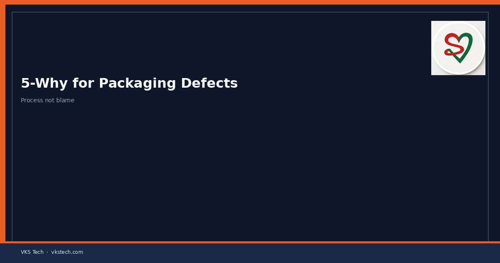
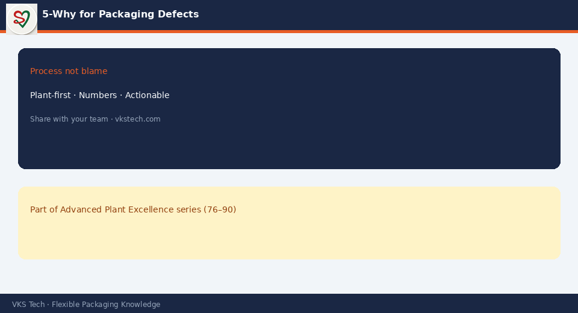

🔎 5-Why Fails When Every Answer Is “Operator Mistake”. Force the Chain Into Process and System.
📖 10-min read · Problem solving · QC + Production
Good 5-Why stays specific: which setting, which batch, which missing check. Stop when you reach a controllable process or system gap — not a person to blame.
📌 Rules
- One defect, one chain
- Evidence at each why
- No “carelessness” as final cause
- End with action owner + date

💡 Test: If the final why cannot be fixed by training, standard or device — dig deeper.
🔎 हर जवाब “ऑपरेटर गलती” हो तो 5-Why असफल है। प्रोसेस और सिस्टम तक ले जाएँ।
📖 10-मिनट पढ़ें
💡 टेस्ट: अंतिम कारण ट्रेनिंग/स्टैंडर्ड/डिवाइस से न सुधरे तो और खोदें।